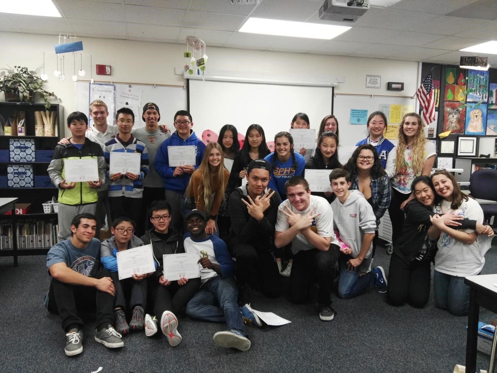
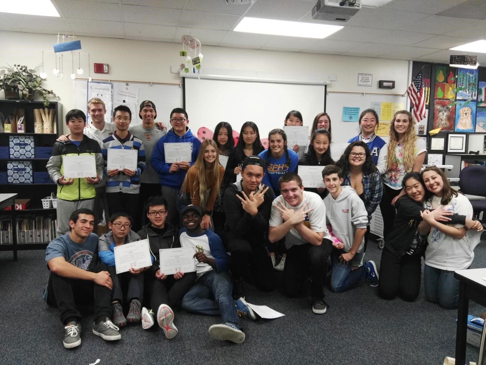

什么是HOBY？
HOBY成立于1958年，致力于激励和培养全球青少年和志愿者团体的领导力、服务精神和创新能力。每年有超过4000名HOBY志愿者都在努力做HOBY青少年培养计划和实践方案，都在为当地HOBY组织及HOBY的受委托人委员会贡献服务。每年有近10,000名学生参加HOBY的项目。
如今，HOBY拥有超过45万名优秀的校友，HOBY校友在美国和全球各地的学校和社区中担任领导者，通过服务对他人产生影响。
HOBY的WLC对15至17岁的国际学生开放。每年有超过400名来自20多个国家的学生参加这一盛会。HOBY领导力课程以基于社会变革模型的领导力为基础，从个人领导力，集体领导力，社会领导力，三个层级出发培养领导力。全球青少年通过领导力的理解和学习，付诸于行动，历练沉淀并走向创新，激发和增强青少年个人对全球社会做出积极的改变。通过HOBY领导力的训练，参与WLC盛会，青少年将成为更成熟的人，认识和了解这个世界，做好准备为社会做出有意义的贡献。
时间：2018.07.15—2018.07.30
• 发展自己的领导力，探索如何成为全球公民。

• 和来自世界各地的优秀学生共同协作，在团队合作中迎接挑战。


• 明确你的个人价值和目标，参与社区志愿者服务。


• 和各界领袖互动交流，建立一个学生、志愿者和领导者的全球网络。

 
